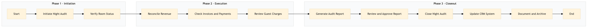

| Role | Steps |
|---|---|
| Front Desk Agent | 1.1 3.3 3.5 |
| Executive Housekeeper | 1.2 |
| Revenue Manager | 2.1 3.1 3.4 |
| Accountant | 2.2 |
| General Manager | 3.2 |
| Step | Name | Role | System | Input | Output | KPI | Dec? | Exc? | Pain Point / Risk |
|---|---|---|---|---|---|---|---|---|---|
| 1.1 | Initiate Night Audit | Front Desk Agent | Oracle OPERA Cloud | None | Night Audit initiated in Oracle OPERA Cloud | < 3 min | N | N | System downtime or connectivity issues |
| 1.2 | Verify Room Status | Executive Housekeeper | Oracle OPERA Cloud | Room status report | Updated room status in Oracle OPERA Cloud | < 5 min per room | N | Y | Incorrect room statuses due to manual errors |
| 2.1 | Reconcile Revenue | Revenue Manager | Oracle OPERA Cloud, IDeaS G3 RMS | Revenue report from Oracle OPERA Cloud | Reconciled revenue data in IDeaS G3 RMS | < 10 min | Y | N | Discrepancies between systems |
| 2.2 | Check Invoices and Payments | Accountant | Oracle OPERA Cloud, SAP S/4HANA | Invoice list from Oracle OPERA Cloud | Verified invoices in SAP S/4HANA | < 15 min per invoice | Y | N | Late or missing payments |
| 2.3 | Review Guest Charges | Front Desk Agent | Oracle OPERA Cloud, Book4Time | Guest charges report from Oracle OPERA Cloud | Updated guest charges in Book4Time | < 20 min per charge | Y | N | Incorrect or duplicate charges |
| 3.1 | Generate Audit Report | Revenue Manager | Oracle OPERA Cloud, Microsoft Power BI | Reconciled data from Oracle OPERA Cloud | Night Audit report in Microsoft Power BI | < 10 min | N | Y | Complexity in generating reports |
| 3.2 | Review and Approve Report | General Manager | Microsoft Power BI | Night Audit report from Microsoft Power BI | Approved Night Audit report | < 5 min | Y | N | Disagreements on audit findings |
| 3.3 | Close Night Audit | Front Desk Agent | Oracle OPERA Cloud | Approved report | Night Audit closed in Oracle OPERA Cloud | < 2 min | N | Y | System errors during closure |
| 3.4 | Update CRM System | Marriott Bonvoy CRM Specialist | Marriott Bonvoy CRM, Oracle OPERA Cloud | Audit report and guest data from Oracle OPERA Cloud | Updated CRM records in Marriott Bonvoy CRM | < 10 min per record | Y | N | Data synchronization issues |
| 3.5 | Document and Archive | Front Desk Agent | Oracle OPERA Cloud, Knowcross HotSOS | Night Audit report and supporting documents | Archived audit documents in Knowcross HotSOS | < 5 min per document | N | Y | Data loss or corruption during archiving |
Night Audit Reconciliation process at a Marriott full-service hotel involves verifying and reconciling financial transactions to ensure accuracy and completeness.